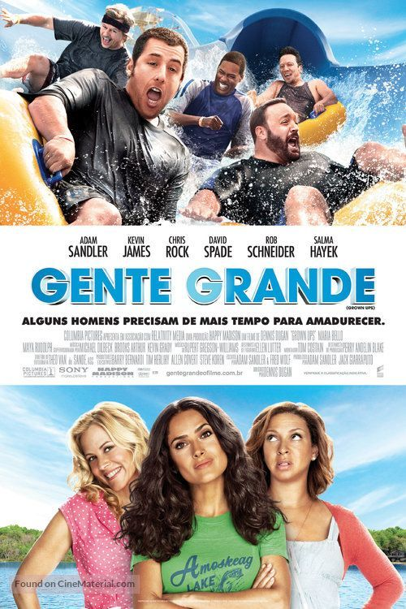

|  | Gente Grande
Direção: Dennis Dugan
Roteiro Fred Wolf, Adam Sandler
Elenco: Adam Sandler, Kevin James, Chris Rock
Em Gente Grande, Lenny (Adam Sandler), Kurt (Chris Rock), Eric (Kevin James), Marcus (David Spade) e Rob (Rob Schneider) se conhecem desde pequenos. Passados trinta anos, os cinco amigos se reencontram para curtir um fim de semana juntos com as respectivas famílias, mas o feriado de 4 de julho em uma casa no lago promete muito mais diversão do que apenas lembranças dos bons momentos. Casados e com várias crianças, os homens de família terão de confrontar o fato de não serem mais tão jovens. |
|
Acesse mais em YouTube SESSÕES
|